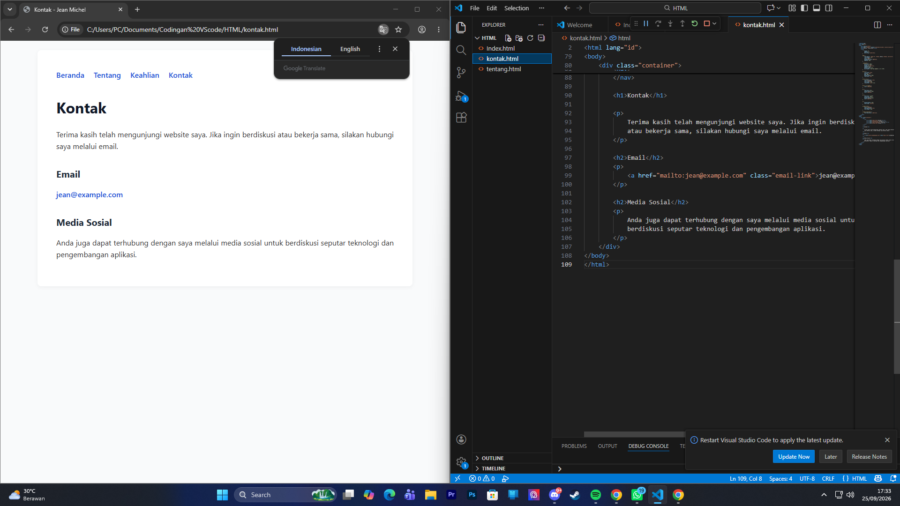
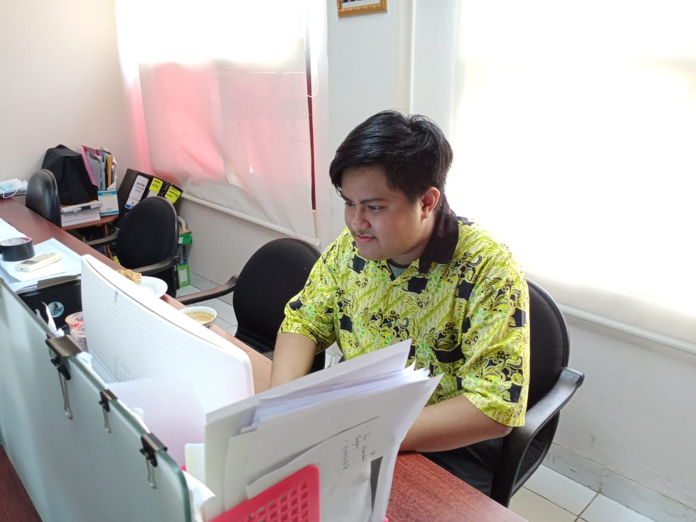
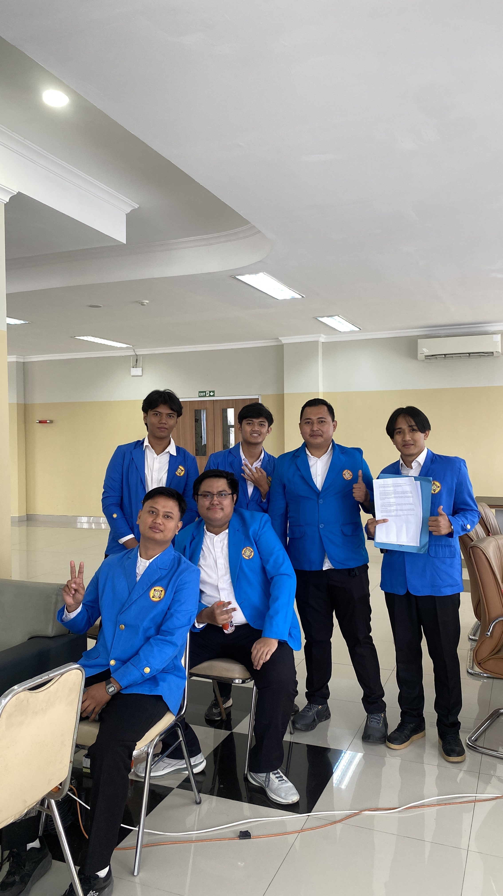

Saya adalah Jean Michel, mahasiswa Universitas Pamulang yang tertarik pada teknologi informasi dan pengembangan perangkat lunak.
Saya ingin mengembangkan kemampuan dalam membangun website, aplikasi mobile, dan sistem basis data yang bermanfaat.
Saya percaya proses belajar yang konsisten, disiplin, dan terbuka terhadap pengalaman baru adalah dasar untuk berkembang di dunia teknologi.

Coding & Development

Belajar & Riset

Kerjasama Tim
| Tahun | Institusi / Organisasi | Keterangan |
|---|---|---|
| 2020 | Ditlantas Polda Banten | Staf Administrasi |
| 2021–2023 | 2e Régiment étranger de parachutistes / Légion étrangère 2e REP | Paratrooper |
| 2022–Sekarang | Direction générale de la Sécurité extérieure / DGSE | Intelligence Officer |
| 2022–2024 | Ministère de l'Europe et des Affaires étrangères | Administrative Staff |
| 2024–Sekarang | Badan Intelijen Nasional / BIN | Intelligence Analyst |